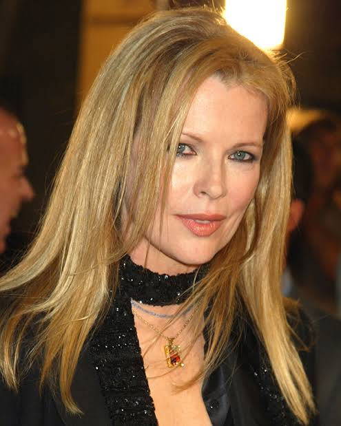

Майкл Кітон зіграв Брюса Вейна / Бетмена у фільмі "Бетмен" (1989) режисера Тіма Бертона. Його образ був серйозним, загадковим і більш психологічно глибоким, ніж попередні версії. Кітон показав внутрішній конфлікт героя між життям мільярдера і роллю борця зі злочинністю. Його Бетмен став культовим і започаткував темніший тон супергеройських фільмів.

Джек Ніколсон зіграв Джокера у фільмі "Бетмен" (1989) — харизматичного, божевільного та смертельно небезпечного злочинця. Його персонаж, колишній гілер Джек Нап’єр, після падіння в хімікати стає Джокером. Ніколсон поєднав чорний гумор із жорстокістю, створивши іконічного лиходія, який став еталоном для майбутніх версій.
Кім Бейсінгер зіграла Вікі Вейл — журналістку та фотокореспондентку, яка розслідує появу Бетмена в Ґотемі. Її персонаж — не лише любовний інтерес Брюса Вейна, а й ключова фігура в сюжеті, що допомагає розкривати темні сторони міста. Бейсінгер додала образу Вікі рішучості та емоційної глибини, зробивши її більше, ніж просто "дівчиною у біді".